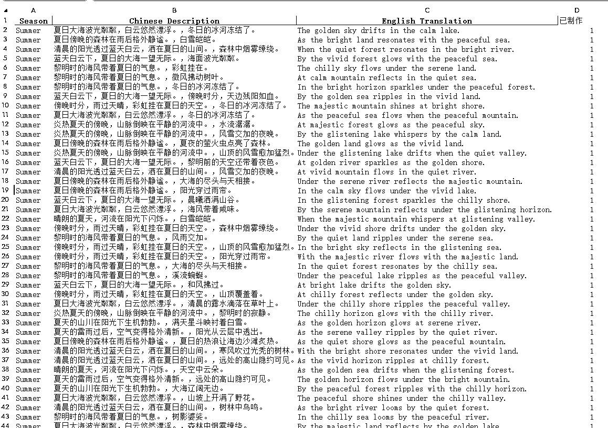

用ChatGPT+RPA+可灵生成1000张治愈风景照 -星球版
来源：https://svox0dxsvym.feishu.cn/docx/DC39dnwpyojjNLx6K9bcHdLDnx4
效果图
先上效果图，引发大家的注意，张张都是大片，都可以做桌面壁纸。
背景
最近开始玩知乎，之前一直没重视知乎，所以就捡起来，半个月快升到了5级。
知乎有每天任务，发表一条动态都要配3张图片，有的时候找图片太难受了，不知道找什么样的图片，怕侵权之类的事儿，最近几天一直有想法自己来用AI生成图片。
这个事儿一直在脑海里卡着，难受.
我之前一直使用Coze智能体来生成图片，怎么说呢？Coze经常性抽风响应特别慢，另外质量并不高，不是我喜欢的类型。
我在想能不能用即梦和可灵来生成图片呢？
我最后选择了可灵，为什么选择可灵，下面会说到。
准备工作
选择生成什么样的图片呢？一开始我是没有太多想法的，我个人认为生成人物照，上千张，其实也不好看，后来想想还是生成风景照吧，治愈系风景照片，看完每天好心情。
就初定了产生风景照。
于是我就用ChatGPT给我生成了一批风景照提示词：根据天气，早中晚时间，季节，山川河流等关键词来组合生成风景照提示词，然后放到excel中。

好，上面的风景提示词都准备好了，这里我准备了中英文两套提示词，都说英文提示词会更好些，咱也不懂，反正无脑上英文提示词，后面文生图也是用英文提示词。
批量文生图
选择文生图模型
文生图工具，我在可灵和即梦两个平台都测试了一下，最终选择了可灵，有两个原因：
- 即梦每次发送提示词要生成4张图片，因为提示词一样，所以4张图片也差不多，我感觉意义不大，还浪费我积分。
- 可灵生成每张图片只需要0.2积分，每个账号每天送66积分，等于每天可以用可灵产生330张图片，我有3个可灵账号，理论上每天可以产生差不多1000张图片，这也是我坚定不移的使用可灵原因
文生图流程
- 打开可灵网站 选择文生图：https://klingai.kuaishou.com/text-to-image/new
- 填写提示词
- 图片长宽比例，我先是4:3，后面改成了16:9，个人感觉16:9的图片更好看，个人喜好，大家选的时候随意。
- 就生成1张图片，因为提示词都一样，生成的图片都差不多，没必要生成4张图，这也浪费积分。
- 点击立即生成按钮
搭建RPA，批量生成图片
第10行标记一下，如果不为0则是已经生成了图片，就不要重复生成。
至此搭建生成风景图的RPA工作流已经完成。
搭建RPA，批量下载图片
图片都生成了，几百张图片，如果一个个手动点击下载也是不小的工作量，于是又搭建了RPA批量下载图片流程。


- 第1-3行主要是打开影刀浏览器并点击展开图片去，点击批量操作
- 第4行，添加一个下载数量变量，存储点击下载的图片数量，可灵单次只能下载20张图片。
- 循环相似元素第6行，这里我选择的是复选框，然后第7行刚好点击这个复选框
- 第8-12行，递增变量然后判断等于20的时候退出循环，然后把下载数量清零方便下一次继续使用。
- 当选中超过20长图片后，点击下载图片会弹出对话框，我们点击保存就好了，记得修改文件名，我这里文件名就用时间戳的格式，精确到秒，保证文件名不同。
- 保存后，等待3秒就删除图片防止重复下载了
- 外面在嵌套一个无限循环就完成了。
解压文件
图片下载完成后，把图片解压一下就好了。
做后反思
- 结果为导向：目的就是批量生成图片，与这个目的无关的事情不要做。
- 快速拿结果：在做的过程中总是想最优解，挺耽误时间的，先做完再说，然后再想办法优化。
- 会使用RPA相当于AI插上翅膀，AI会变得更牛逼，所以RPA技术值得大家花功夫学一学。
联系我
略
最后如果觉得有帮助，不要吝惜你的一个免费的赞，对你来说举手之劳，对我来说是莫大的鼓励